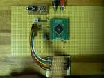
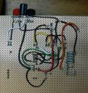
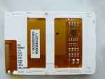

The schematic of the testboard is shown in the picture below. Both display supplies are connected to a 2.9V supply that is generated out of an LDO from the 5.0V supply of the atmega128 µC. I used the IRU1205CLTR LDO because i will later need the power on/off feature of this LDO. The atmega128 is running with 16MHz.
The five interface lines between the display and the µC are level-shifted from the 5V domain of the µC to the 2.9V domain of the display. Because the interface will run with 8MHz the impedance has to be low to get stable signals. It might be a good idea to go to active level shifter in future to save power, especially for the RESET line because this line has to be high as long as the display is used. On the other hand you can use a higher impedance level shifter here because speed is not important.
Here are pictures of the testboards used to develop the hardware/software.
 If you are using the display in bright light you should protect the display controller (seen at the top of the display) with a black duct tape. It might be that the controller is sensitive against too much light radiation.

The Display pin description can be found on the picture on the left.
The display forward voltage was measured at one part to be 10.4V at 20mA current. That means a relative large voltage is needed. This voltage can be easily generated with a PWM signal generator of the µC.
(Do not forget to switch on the current limitation of your power supply until the PWM generator is running correct. If you drive the n-channel gate high for a longer time you will have a short circuit.)
For the circuit below you need a pulse width (high/period) of 47% at a period frequency of 62.5kHz to generate the required voltage with 15mA LED current. A block capacitor is already implemented on the display and is not needed. You can adjust the brightness of the display by varying the OCRn value. No software interaction is needed to generate this waveform with AVR processor. The code example below for the ATmega128 uses timer 2 with OC2 (PB7) for PWM generation. That means you can not use PB7 for LCD_RS any more (as in the circuit above). LCD_RS can be changed to PB5 for example.
For the final running application an over voltage protection is not required. But during testing and development it is not a bad idea to add a protection device. That might protect the circuit against hardware/software malfunctions.
{kind=link}